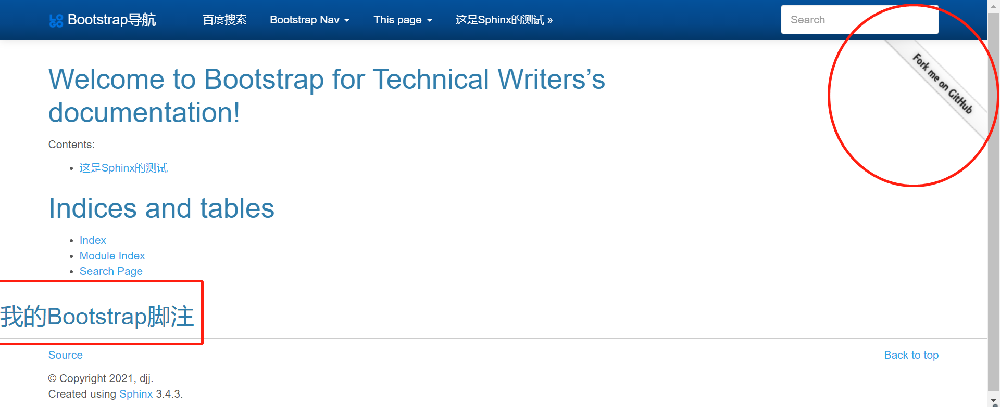

实现复杂自定义¶
前一章为简单自定义，在此章将介绍怎样覆盖此Sphinx主题中的任何模板，实现真正的自定义。 实现复杂自定义可以通过自定义HTML、CSS文件来实现。具体介绍如下。
扩展 HTML 文件¶
首先，在自己
source目录下的_templates文件夹中添加layout.html文件，如下图所示：随后，在
conf.py中输入templates_path = ['_templates']进行配置, 如下图所示：最后，编辑替代文件
source / _templates / layout.html，下面代码为一个样例:{# 导入布局文件 #} {% extends "!layout.html" %} {# 添加功能，并使用{{super()}}覆盖原有模板,此处功能为自定义脚注标题 #} {% block footer %} <h2>我的Bootstrap脚注</h2> {{ super() }} {# 添加Banner功能,点击Banner进入我的github主页 #} <a href="https://github.com/djj-djj" class="visible-desktop hidden-xs"><img id="gh-banner" style="position: absolute; top: 50px; right: 0; border: 0;" src="https://s3.amazonaws.com/github/ribbons/forkme_right_white_ffffff.png" alt="fork_me_on_github"></a> <script> // Adjust banner height. $(function () { var navHeight = $(".navbar .container").css("height"); $("#gh-banner").css("top", navHeight); }); </script> {% endblock %}
自定义结果如下图所示：
更多的html自定义编写请参考 HTML 教程
扩展 CSS 文件¶
首先，在自己
source目录下的_static文件夹中添加my-styles.css文件，如下图所示：随后，在conf.py中输入
html_static_path = [" _static"]进行配置, 如下图所示：
这里开始需要考虑您的Sphinx的版本问题，若 Sphinx<= 1.5，执行完此步骤后可以条过第四步，您需要在
layout.html文件开头处添加以下代码:{# 导入布局文件 #} {% extends "!layout.html" %} {＃自定义CSS覆盖＃} {％set bootswatch_css_custom = ['_static / my-styles.css']％}Sphinx版本>1.5的用户在上述操作的基础上，还要在conf.py末尾加入:
def setup(app): app.add_stylesheet("my-styles.css") #此处可引入多个CSS文件 # app.add_stylesheet("ANOTHER.css") # app.add_stylesheet("AND_ANOTHER.css")
最后，在
my-styles.css文件中添加自定义内容，以下代码为具体例子:#此处将导航条名称定义为黄色 .navbar-default .navbar-brand { color: yellow; } #此处将页脚背景颜色定义为红色 footer{ background-color:red; }
- 自定义结果如下图所示：
更多的CSS文件的自定义编写请参考 CSS 教程